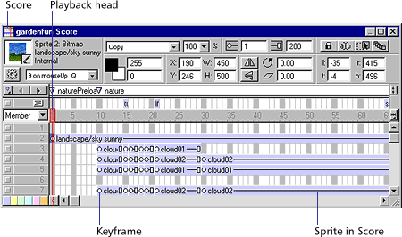

Using Director > Director basics > Introducing the Director workspace > The Score
Using Director > Director basics > Introducing the Director workspace > The Score |
The Score
If the Score is not visible, choose Window > Score.
The Score organizes and controls a movie's content over time in rows that contain the media, called channels. The Score includes special channels that control the movie's tempo, sound, and color palettes. The Score also includes frames and the playback head. You use the Score to assign scripts—Lingo instructions that specify what the movie does when certain events occur in the movie.
You can control the Score by zooming to reduce or magnify your view and by displaying multiple Score windows. You can also control the Score's appearance by using File > Preferences > Score.
